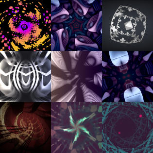
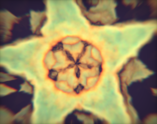

Shadertoy
- Checkout all my shaders on shadertoy !
- Some shaders has been rendered in GIF, checkout on my giphy !
Fanzine publication #003
- Publication in Cookie Fanzine #003.
- Checkout the fanzine here, and see the code on shadertoy

Organic Dodecahedron
- Volumetric signed distance field using alpha-blending and a color density gradient.
- See the code on shadertoy
Cat Tracer (4KiB executable)
- Cat Tracer - 4KiB demo released at Outline 2019 with Flopine.
- "Real-time" pathtracer using procedural geometry and animation in 4KiB executable.
- Demo entry on pouet.net
- Checkout the video on youtube
- See the code on shadertoy
Fanzine publication #001
- Publication in Cookie Fanzine #001.
- Checkout the fanzine here, and see the code on shadertoy
Mist (4KiB executable)
- Mist - 4KiB demo released at cookie 2018.
- Demo entry on pouet.net
- Checkout the video on youtube
- See the code on shadertoy here,
also checkout the other part of the demo from Flopine here